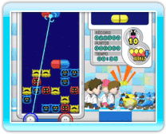

7 |
¡Bienvenido! |
 |
En Dr. Mario & Bactericida hay dos juegos distintos: Dr. Mario y Bactericida. Los dos comparten los mismos objetivos y reglas pero se controlan de manera diferente.

● ¿En qué consiste El objetivo del juego consiste en usar las cápsulas para eliminar bacterias. Si juntas horizontal o verticalmente cuatro o más bloques del mismo color, desaparecerá toda la línea, ya sean cápsulas o bacterias. Sujeta el mando de Wii en posición horizontal y utiliza los botones para jugar a Dr. Mario. 
● ¿En qué consiste Bactericida? El objetivo de este juego es el mismo que el de Dr. Mario: eliminar bacterias usando las cápsulas. En este juego, tendrás que sujetar el mando de Wii en posición vertical y dirigir el puntero hacia la pantalla. Pueden jugar hasta cuatro jugadores al mismo tiempo. ● Enfrentamientos En Dr. Mario puedes enfrentarte a un amigo desde una misma consola o usar la Conexión Wi-Fi de Nintendo para competir con jugadores de todo el mundo. También puedes enfrentarte con gente que no haya comprado el juego usando una demo (Dr. Mario Demo) que puedes enviar a tus amigos mediante WiiConnect24. |
 |
 |
 |